Trait Details
Stormy Seas
Variant Temporary Cards Containing [Stormy Seas].
Max-Level Effect: Activates at the start of battle. During this round, your Battle Beast damage bonus increases by 22% (Power 714).
Max-Level Effect: Activates at the start of battle. During this round, your Battle Beast damage bonus increases by 22% (Power 714).
Related Cards / Images
18 items
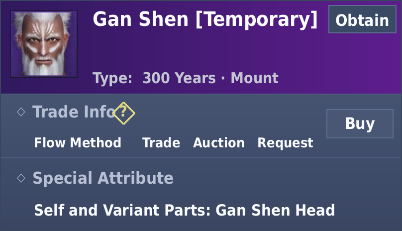
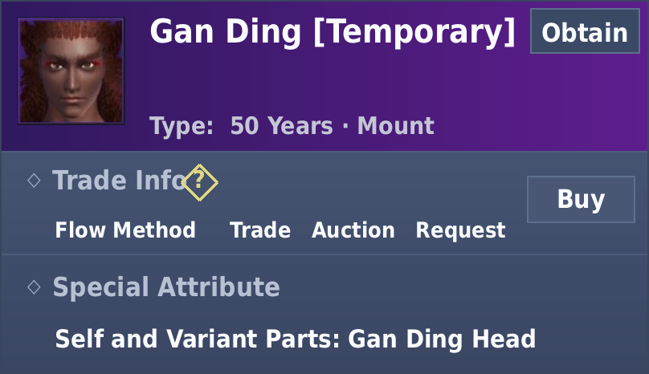
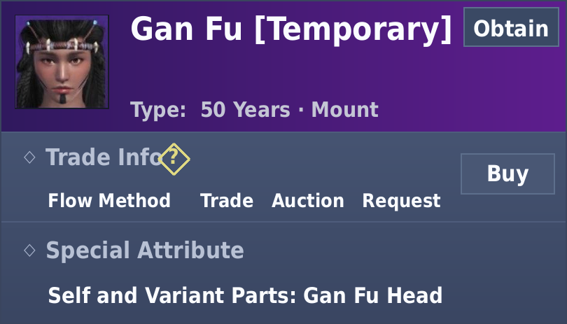
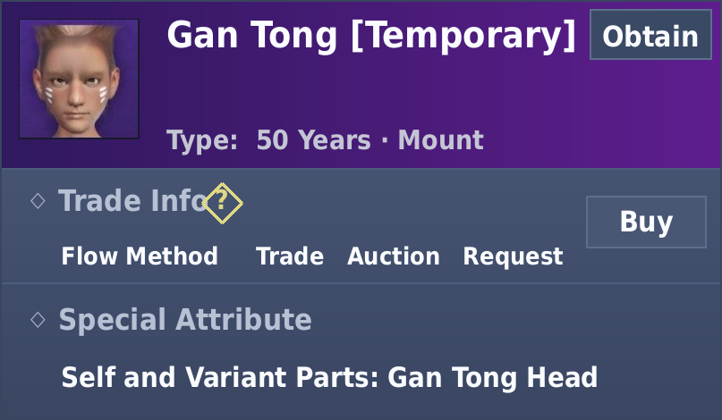
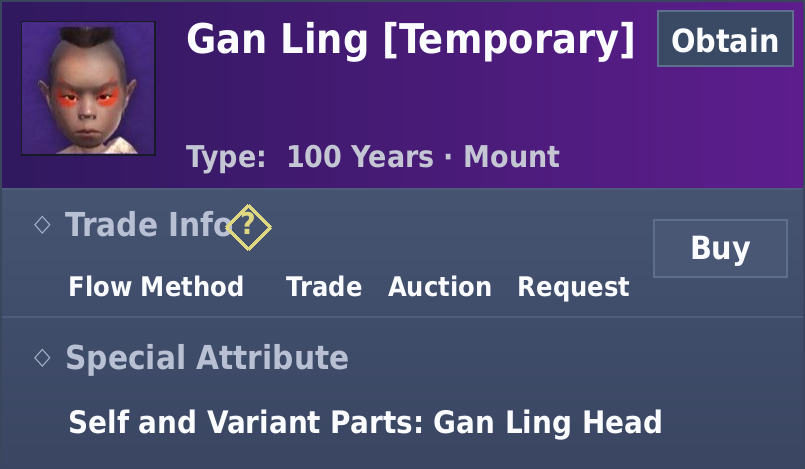
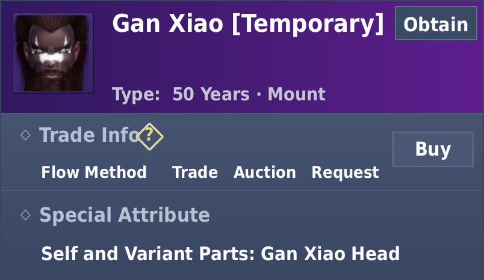
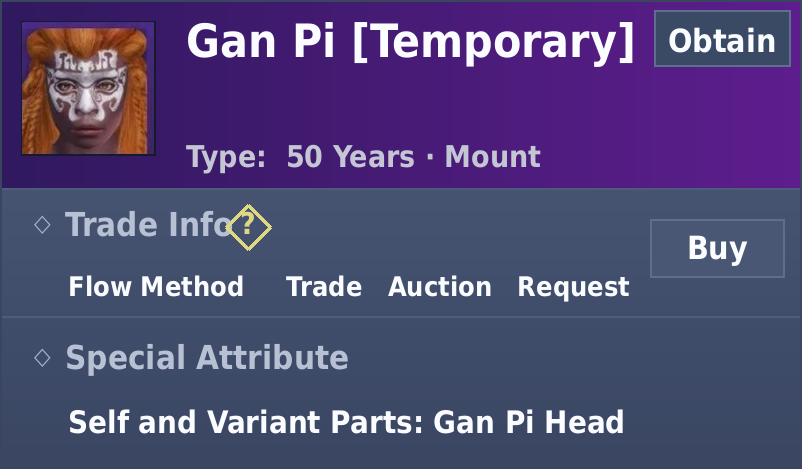
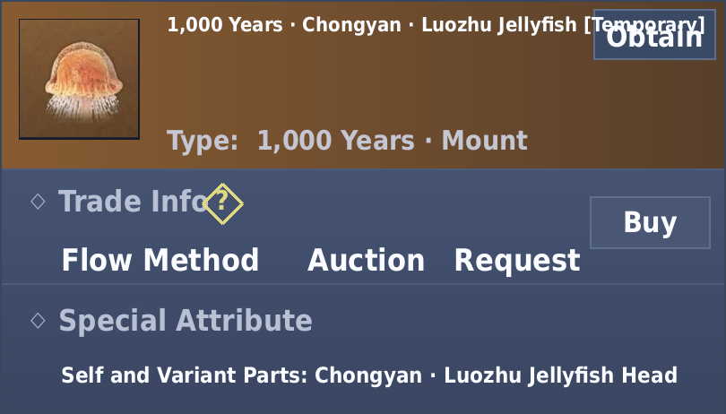
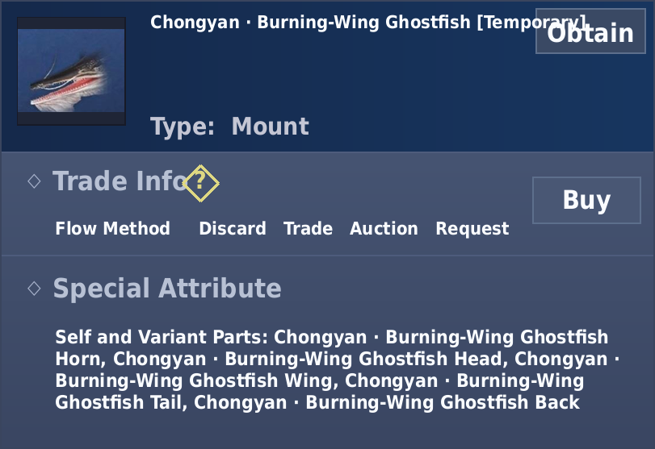
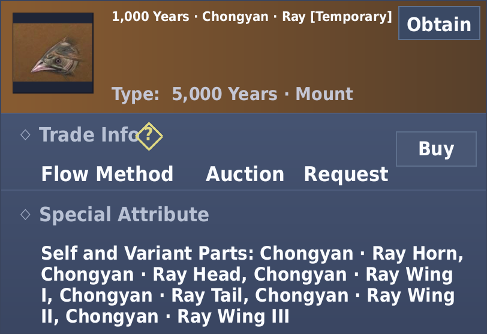
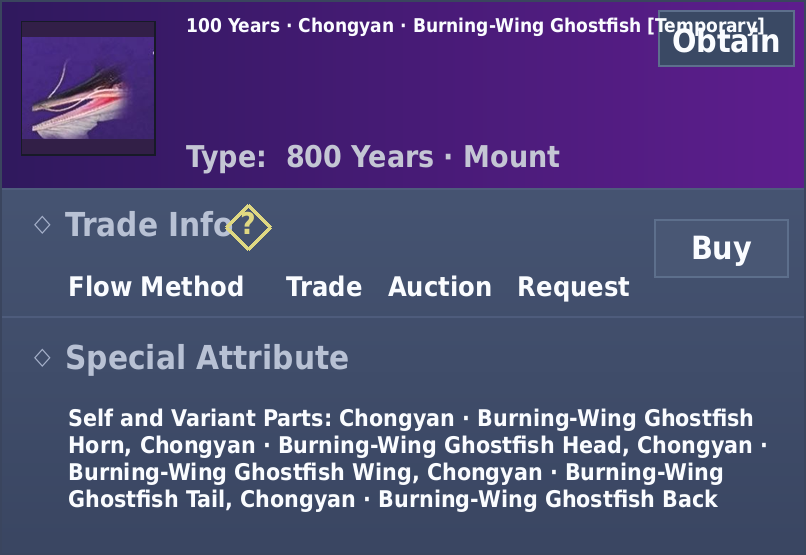
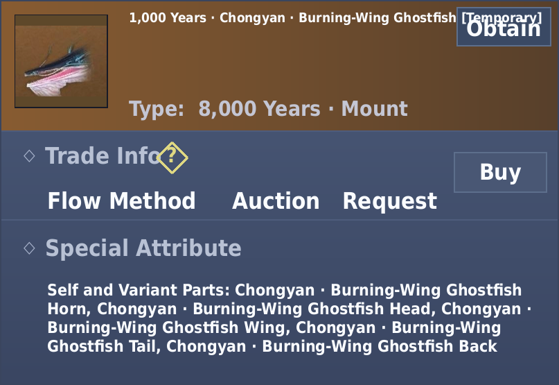
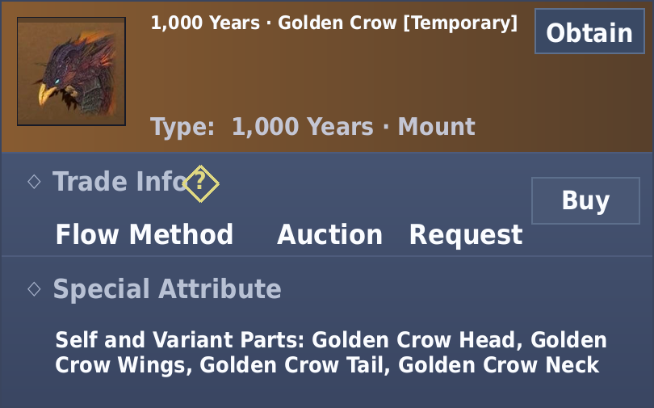
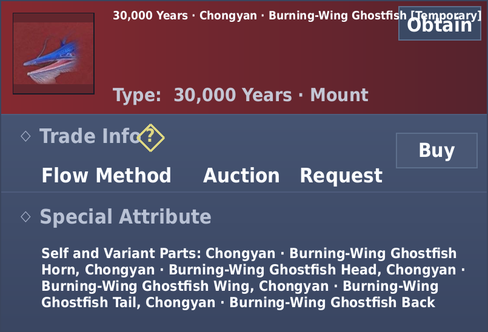
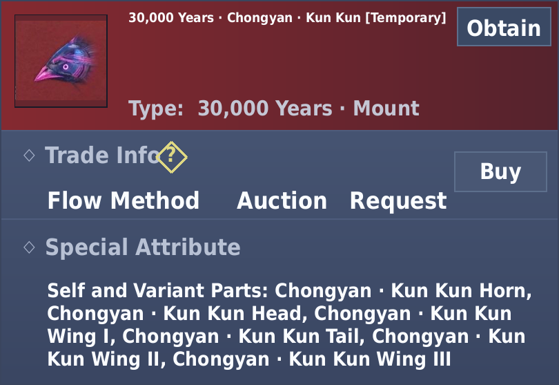
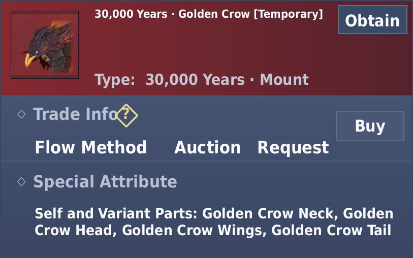
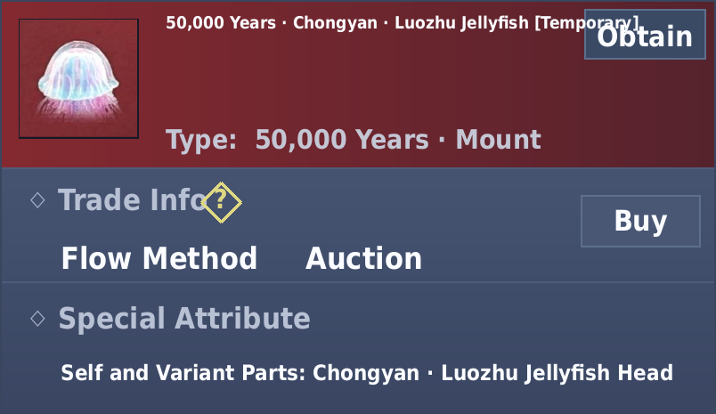
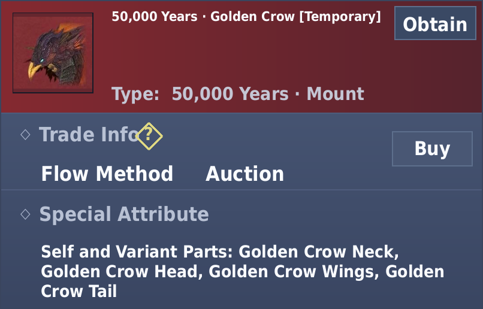